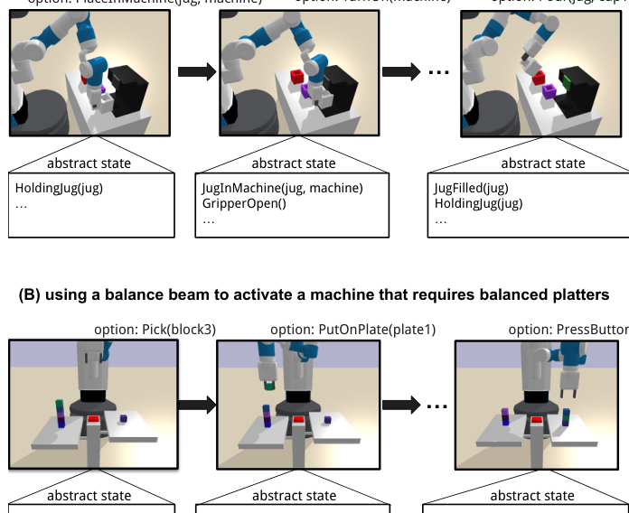
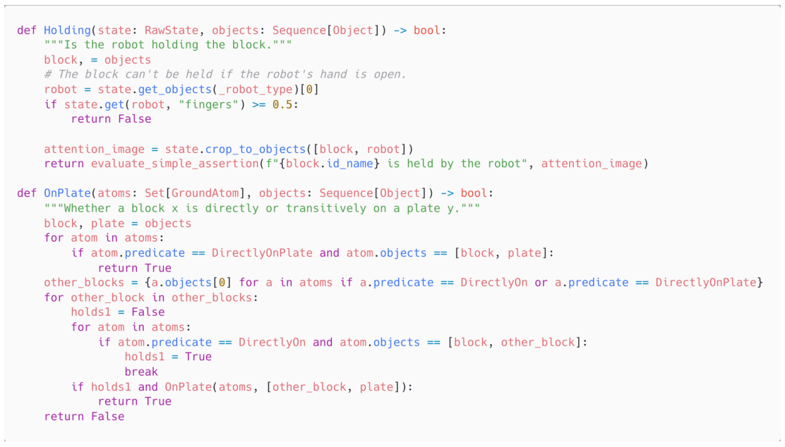
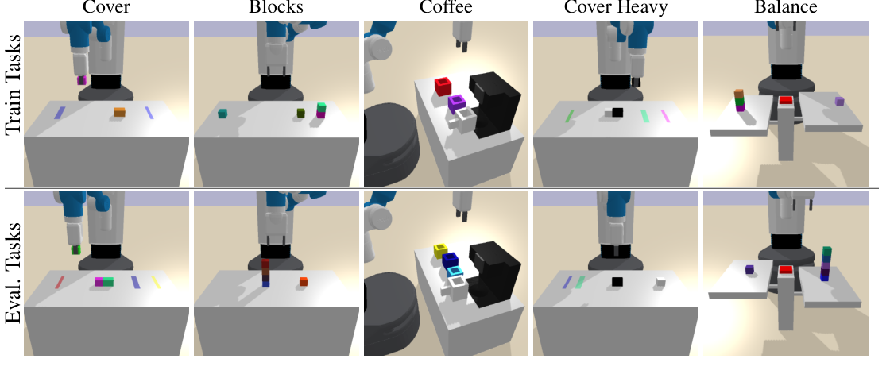
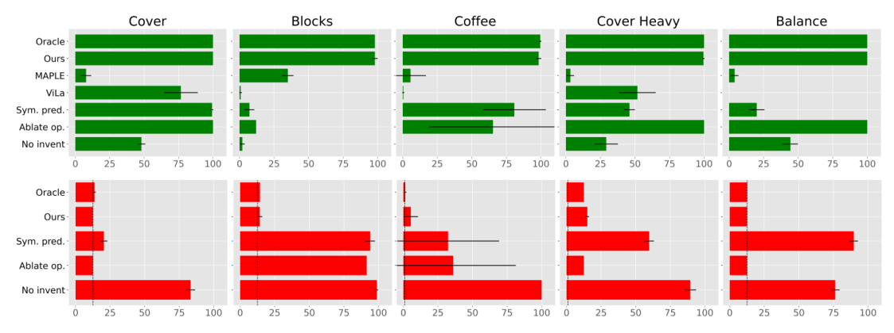

神经符号谓词
抽象世界模型
VLM 感知接地
在线谓词发明
ICLR 2025 · arXiv 2410.23156
VisualPredicator：用神经符号谓词学习抽象世界模型，用于机器人规划
VISUALPREDICATOR: Learning Abstract World Models with Neuro-Symbolic Predicates for Robot Planning
Yichao Liang, Nishanth Kumar, Hao Tang, Adrian Weller, Joshua B. Tenenbaum, Tom Silver, João F. Henriques, Kevin Ellis · Cambridge / Cornell / MIT / Princeton / Oxford / Turing Institute
一句话总结： 机器人规划既需要感知丰富 （看出油腻的锅铲很难抓）又需要逻辑丰富 （用天平称重时要数两边质量）的抽象。本文提出 Neuro-Symbolic Predicates（NSP） ——一段能调用 VLM 查询感知属性、再用 Python 算法做逻辑运算的代码片段——作为一阶抽象语言，并给出在线 发明谓词、学习抽象世界模型的算法。在 5 个仿真机器人域上，样本效率、分布外泛化、可解释性均优于分层强化学习、VLM 规划与符号谓词发明方法，逼近人类手工设计的 oracle 抽象。
① 摘要解读
② 背景与动机
③ NSP 表示
④ 学习算法
⑤ 实验设置
⑥ 结果与分析
⑦ Insights
⑧ 链接
01 摘要解读广泛智能的智能体应形成任务特定的抽象 ，选择性地暴露任务的关键要素、屏蔽原始感知运动空间的复杂性。本文提出 Neuro-Symbolic Predicates ——一种一阶抽象语言 ，结合符号与神经知识表示的优势，并给出在线发明这些谓词、学习抽象世界模型 的算法。
在分布内与分布外任务上，作者对比了分层强化学习（HRL）、VLM 规划、符号谓词发明三类方法，跨 5 个仿真机器人域。结果表明本方法样本复杂度更低、分布外泛化更强、可解释性更好 。
NSP
Python 代码 + VLM API 查询的一阶抽象语言
5 域
PyBullet 仿真：Cover/Blocks/Coffee/Cover Heavy/Balance
7 方法
对比 HRL/VLM/符号基线 + oracle
02 研究背景与动机（Introduction）规划需要"感知 + 逻辑"双丰富的抽象
以家用机器人为例：要知道"油腻的锅铲难抓"——判断"是否油腻"是微妙的感知问题 ；而用天平称重、判断天平朝哪边倾斜，则要数两边质量并比较——这是逻辑上精密的运算 。传统机器人任务规划用硬编码的符号世界模型 ，无法适应新环境；近期工作用受限的学习形式推动抽象学习，但限制允许的感知与逻辑抽象、且需要示范数据 ，不能让机器人自主探索。
NSP 的表示能力
NSP 的表示能力带来两大突破：
更宽的感知原语 ：原则上 VLM 能感知的一切（颜色、材质、油腻程度、遮挡关系…）都可作为谓词；更深的逻辑结构 ：原则上 Python 可计算的任何东西（计数、比较、递归、循环…）都可编码进谓词。
三大挑战
谓词须从像素级输入 学习，极其复杂且可能含噪；
不能过拟合训练情形，须零样本泛化 到测试时的复杂新任务；
需要高效探索 不同计划来收集学习好谓词所需的数据。
核心洞见：把 VLM 的"看图说话"封装成"可组合的谓词"
借鉴 ViperGPT / VisProg 的思路，NSP 让 VLM 回答"机器人是否抓住 jug？"这类自然语言断言，再在 Python 里对结果做算法操作（递归、计数、比较）。这样，感知的柔性与逻辑的严谨被统一进同一种可被标准规划器消费的符号表示。
三大贡献
NSP ：一种兼具逻辑与感知丰富特征的决策状态表示；发明 NSP 的算法 ：通过与环境的交互在线学习，并扩展了一个新的操作学习算法；评估 ：在 5 个仿真机器人任务上对比 6 种方法。

图 1：机器人学习域示例，展示学到的神经符号谓词。(A) 做咖啡并倒入两个杯子——学到查询 VLM 判断咖啡壶是否在咖啡机内的谓词；(B) 用天平激活需平衡托盘的机器——学到判断天平是否平衡的谓词。
03 NSP 表示：谓词与高层动作3.1 谓词：抽象状态
谓词 ψ 是状态的布尔特征，可被特定物体参数化。一谓词集 Ψ 诱导出抽象状态 = 当前状态下成立的所有"谓词-物体"组合：
ABSTRACTΨ (x) = { (ψ, o₁, …, om ) : ψ(o₁,…,om ) 在状态 x 中成立 }
3.2 两类 NSP
Primitive NSP（原语谓词） ：直接对原始状态求值，如 Holding(obj)（用 VLM 查询）、GripperOpen()（用本体感受）；Derived NSP（派生谓词） ：只基于其他 NSP 的真值计算自身真值，如 OnPlate 递归判断"某块是否在盘子上、或在盘子上的东西上"。派生谓词处理逻辑丰富的关系（计数、递归、比较）。

图 2：Holding 与 OnPlate NSP 的分类器示例。Holding 直接查 VLM；OnPlate 是递归的派生谓词——判断块是否在盘上，或在盘上的东西上。
3.3 提升原语谓词精度的两个技巧
额外上下文 ：VLM 并非 100% 准确（遮挡、部分可观测）。因此谓词额外条件化于上一个动作 、上一帧视觉观测 、上一个真值 （如"刚执行了 Pick(jug)"可消解"壶是被夹住还是仅仅在旁边"的歧义）；视觉编号标注 ：给 RGB 图中每个物体叠加唯一 ID 数字（沿用 SoM 做法），让 VLM 能精确回答"机器人抓住的是 block2"而非笼统的"抓住了某个块"。
3.4 高层动作（HLA）：细化动作空间
HLA 为技能增补先决条件 （哪些抽象状态允许成功使用该技能）与后置条件 （技能如何变换抽象状态）。形式化：
ω = ⟨π, PRE, EFF⁺, EFF⁻⟩
谓词 + HLA 共同定义抽象世界模型，其转移函数 F 为：若 PRE ⊆ s，则新状态 = s ∪ EFF⁺ \ EFF⁻，否则未定义。关键约束：派生谓词不进入后置条件 （因为可立即由原语谓词的真值算出）。
3.5 分层规划与两类失败
高层用标准符号规划器（A* + LM-Cut 自动启发式）先规划 HLA 序列，再逐条调用技能策略得到低层动作。学习正是由失败驱动：
失败 #1 Infeasible（不可行） ：某技能执行失败；失败 #2 Not satisficing（不满足） ：技能都成功执行，但未达成目标。
04 学习算法：与环境交互发明抽象Algorithm 1 交替进行"学习谓词（状态抽象）、学习 HLA（抽象转移函数）、与环境交互"三件事，跟踪最高训练解决率 ρ_best 与最少不可行计划数 ν_best。
4.1 探索（Exploration）
智能体用当前谓词/HLA 规划并执行，收集三类数据：正转移片段 （成功执行的技能）、负状态-动作元组 （执行失败的技能）、满足计划 （若有）。
4.2 提议谓词（Proposing Predicates）——三种 VLM 提示策略
判别（Discrimination） ：给 VLM 看技能成功/失败的示例状态，让它生成预测"技能何时可用"的代码——发现好的先决条件；转移建模（Transition Modeling） ：给 VLM 看成功执行前后的快照，生成描述"哪些属性变了"的代码——发现好的后置条件；无条件生成（Unconditional Generation） ：不依赖原始数据，让 VLM 把已有谓词做逻辑扩展——帮助创造派生谓词。
4.3 选择谓词集（Selecting Predicates）
VLM 生成的谓词精度通常低（不是所有生成都有用），过多谓词又会过拟合。本文假设没有示范数据 （早期可能找不到任何满足计划），因此设计了新目标：基于分类准确率 + 简洁偏置 评分谓词集（先学 HLA，再算 HLA 的分类准确率）；后期收集到足够满足计划后切换到 Silver et al. (2023) 的目标（规划效率 + 简洁性）。用贪心最优优先搜索（GBFS） 从目标谓词集出发逐个加入候选谓词。
4.4 学习高层动作（Learning HLAs）
沿用 cluster-and-intersect 操作学习算法并改进先决条件学习器。改进动机：Chitnis et al. (2022) 假设给定示范轨迹、学受限先决条件；本文智能体从零探索、无示范 ，需要更乐观的世界模型 去探索未见情形。新的先决条件学习器保证：每条转移数据被恰好一个 HLA 建模，并最小化 HLA 的语法复杂度以鼓励乐观模型。
05 实验设置实验平台（5 个 PyBullet 仿真域）
环境 任务 技能 Cover 拾放特定块覆盖桌面指定区域 Pick / Place Blocks 按指定配置搭建块塔 Pick / Stack / PlaceOnTable Coffee 装咖啡（放壶入机、煮、倒） Twist / Pick / Place / TurnMachineOn / Pour Cover Heavy Cover 变体：抬不动的大理石块（"不可能任务"） 同 Cover Balance 按下按钮激活机器（需两边放等量块） PressButton + Blocks 技能

图 3：环境。上排为训练任务示例，下排为评估任务示例（物体更多、目标更复杂）。
评估协议与指标
每结果对 5 个随机种子平均，每种子采样 50 个测试任务 （物体更多、目标更复杂）；
训练任务数：Cover/Coffee 各 5、Cover Heavy/Balance 各 10、Blocks 20；
规划预算 n_abstract：除 Coffee（=100）外均为 8；
指标：solve rate（解决率） + planning budget utilization（规划预算使用率，越低越好） 。
对比方法（7 种）
方法 说明 Ours（本文） NSP 表示 + 在线谓词发明 MAPLE HRL 基线：学 Q 函数选高层动作，不显式学谓词、不做规划（加了目标条件） ViLa VLM 规划基线：零样本 prompt VLM 规划动作序列，无学习 Sym. pred. 同算法但只能用常见物体特征写谓词（无开放式 VLM 查询、无派生谓词） Ablate op. 不用扩展操作学习器的消融 No invent 只用初始抽象、不做任何学习 Oracle 手工设计谓词与操作的规划智能体（上界参考）
06 实验结果与分析

图 4：上排为各域解决率（↑），下排为规划预算使用率（↓）。虚线表示解决所有任务所需的最少计划数（每任务 1 个计划）。
6.1 Q1：全面超越 HRL 与 VLM 规划基线
本方法在所有域 上一致超越 MAPLE 与 ViLa，达到接近满分的解决率；
MAPLE 即便在训练分布内、用相近交互数据也表现挣扎（稀疏奖励下的探索难题）；
ViLa 只在简单任务（Cover）尚可，一旦块初始就在机器人手里就会冗余重复抓取 （过拟合迹象）；在复杂域常生成不可行计划（从堆中间抽块、不辨壶方向就抓）。
6.2 Q2：逼近手工 oracle 抽象
本方法显著优于 No invent（证明学习谓词抽象的收益），达到与使用手工设计抽象的 Oracle 相近的解决率与效率——自主发现与人类专家手工打造的抽象同样有效 。
6.3 Q3：NSP 表示优于传统符号谓词
Sym. pred.（只用物体特征、无 VLM 查询与派生谓词）在简单域尚可，但在需要感知线索接地 的域失败：Coffee 里无法可靠判断"壶是否在咖啡机内"（TurnMachineOn 的关键先决条件）；Cover Heavy 里无法识别"抬不动的重块"；Balance 里没有派生 NSP 就难以推理"天平两边块数是否相等"。作者推测：把每状态所有物体的特征值对全塞进 prompt 会压垮 VLM，导致谓词发明质量差。
6.4 Q4：扩展操作学习器的价值
优于 Ablate op.——后者有时学到过于复杂、过拟合早期少量数据 的先决条件（如给 Pour 加上 JugInMachine），阻碍后续学习或损害泛化。这体现了改进的操作学习器在数据稀缺、基于探索的学习场景下的价值。
07 核心 Insights
1. 感知与逻辑不必二选一，可用"代码 + VLM"统一
NSP 的威力在于把 VLM 的自然语言问答封装成布尔谓词，再用 Python 做递归/计数/比较。这让抽象同时"看得懂"（感知）又"算得清"（逻辑），且能被标准符号规划器直接消费。
2. 用"上一个动作/观测"当上下文，缓解 VLM 的感知歧义
部分可观测下单帧图像不唯一，但"刚执行了 Pick(jug)"这种动作上下文能消解遮挡歧义——把时序信息注入谓词求值是提升精度的廉价而有效手段。
3. 没有示范数据时，谓词选择要靠"分类准确率 + 简洁偏置"
早期找不到满足计划，无法用需要示范的目标。本文用"先学 HLA 再算分类准确率"作为替代，后期再切换到规划效率目标——让在线学习在数据稀缺阶段也能启动。
4. 乐观世界模型对探索至关重要
与"贴近示范"的保守先决条件相反，从零探索的智能体需要
乐观 的先决条件去尝试未见情形，再用失败数据修正——先决条件学习器的语法简洁性偏置正是为鼓励乐观而生。
5. 派生谓词是"逻辑丰富"的关键来源
天平平衡（两边块数相等）这类抽象，靠单一 VLM 查询难以稳定判断，但用递归/计数的派生谓词就能可靠、高效地推理——这正是 NSP 相对"纯符号特征"方法的本质优势。